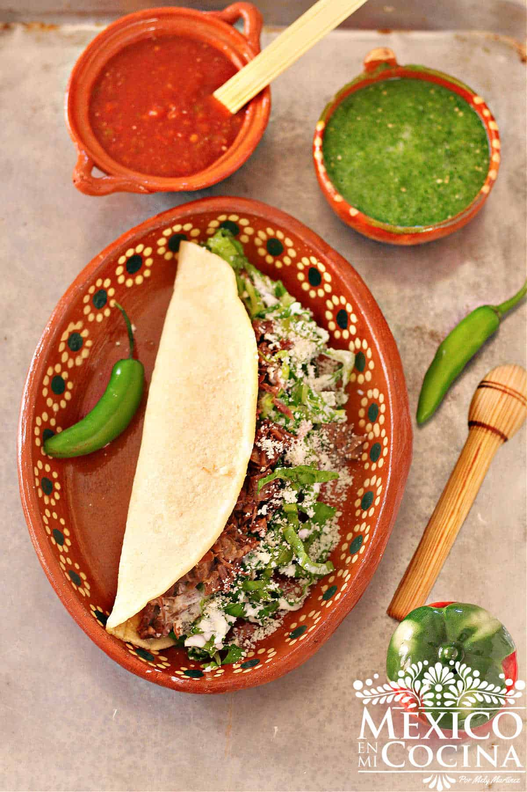

Quesadillas

Super deliciosas quesadillas de carne deshebrada de res. El queso derretido y la carne juntos hacen una
combinacion muy rica. Aparte, al agregarle lechuga y queos fresco complemtne muy bien todo el platillos. Te
recomiendo mucho este platillo.
Ingridients
- Carne de res
- Cebolla blanca
- Dientes de ajo
- Hoja de laurel
- Sal al gusto
- Harina de maíz
- Agua
- Queso Oaxaca
- Lechuga picada
- Queso
- Crema de mesa
Steps
- Coloca la carne en una olla con ½ cebolla y 2 dientes de ajo. Añada la hoja de laurel y cubra con 2 tazas de
agua. Cocina hasta que la carne esté tierna y se pueda sehebrar facilmente. (Si utilizas una olla de presión
eléctrica, cocina por 30 minutos).
- Deshebra la carne una vez que se haya enfriado. Sazona con sal y reserva.
- Mezcla 1½ tazas de masa-harina con 1¼ tazas de agua para formar una masa suave (agrega más agua si es
necesario). O si estas usando masa fresca amasa con una cucharada de agua. Divida la masa en 4 bolas
grandes.
- Presiona cada bola de masa para formar un tronco, luego colócala entre 2 hojas de plástico y presione la
masa con un plato de vidrio o molde de pastel. Esto formará una gran tortilla de forma ovalada.
- Coloca la tortilla en una comal calient, voltando la tortilla por cada lado dos veces. Una vez que la
tortilla esté cocida, rellénala con 2 cucharadas de queso, 1 cuarto de taza de carne deshebrada, y cúbrala
con la lechuga, la crema y el queso. Dobla la tortilla y dejala unos minutos en el comal a que se derrita
bien el queso Oaxaca.